k-Day 086｜曬太陽
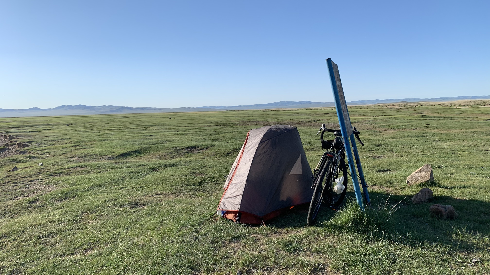
最近四點多天就亮了，總覺得睡不飽，一直想賴床。
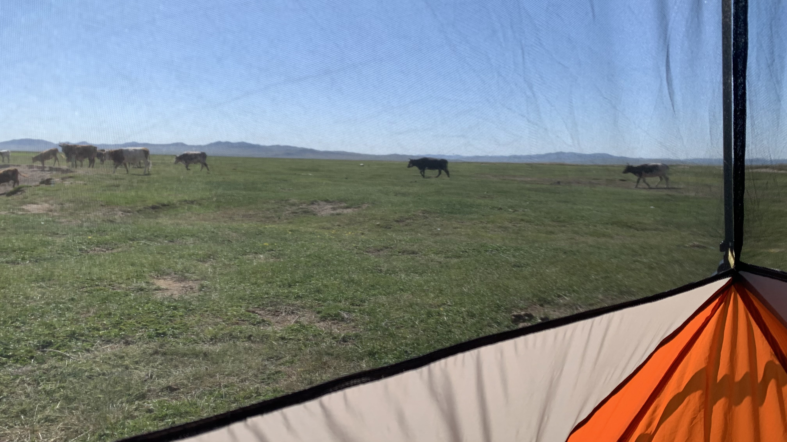
起床尿尿走回帳篷時看到這景象，這可是最後的晴天，我要躺在帳篷裡享受它。
九點起床收拾，一群牛從帳篷外經過，看來是準備到河邊喝水。
昨晚是馬群，今早是牛群，烏蘭巴托遺留在心裡的都市焦慮感似乎獲得緩解了。
把行李搬到帳篷外，不趕路也沒有目的地。這是出發以來最平靜的時間，不再焦慮出發後的逆風和陡坡，唯一的目標是在明天開始刮風下雨前好好享受草原的一切。
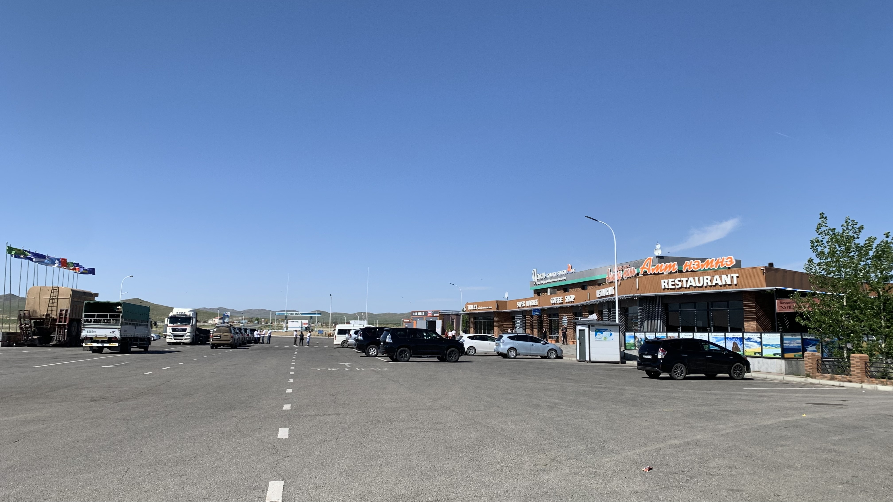
回到人類世界，這地方似乎是很大的旅行休息站，門口站著各式不同國家長相的人。
第一個朝我走來的是德國大叔，閒聊了一陣，往廁所方向走時，聽到兩名女性正在用疑似台語的語言耳語。自從到蒙古後，不同的人會嘗試用不同的語言和我溝通。除了蒙語外，最大宗的就是英、日、韓。烏蘭巴托的青旅又多了中文和法文的室友，所有的語言都溶成一種類似的人類聲調，以至於耳朵已經無法反射性判斷。
鼓起勇氣湊近兩人身邊，單刀直入地問：「你們是台灣人嗎？」果不其然，是台南鄉親，時隔多月聽到台語，真是太親切了。目測他們應該是跟著旅行團剛抵達蒙古不久的團客，對於我這樣過於開心的反應不知該作何表情。上完廁所將二十三號推到餐廳角落正準備進門，輪到同團的大哥大姐來搭話，聊完天一起拍了合照。
接著遠處走來一位貌似法國人的女性，打招呼後他問我從日本來的嗎？我很驚訝他怎麼知道的，莫非二十三號透漏出日本的自行車氣味？原來是她和男友不久前在日本騎自行車，「我在東京待了一週，因此現在分得出蒙古人和日本人。」這就尷尬了，該不該多嘴解釋自己是台灣人呢？
這名女性確實是法國人，叫做Carine，男友叫Matthieu，兩人相當熱情，留了電話跟我說等到了法國若想去諾曼第，或者途徑瑞士都可以和他們聯繫。「這是自行車社群的互助。」他們是這麼說的。
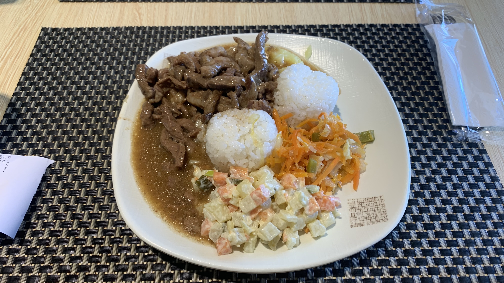
進餐廳點了一盤羊肉米飯，有點清淡的味道，畢竟很餓還是連醬汁都清空了。
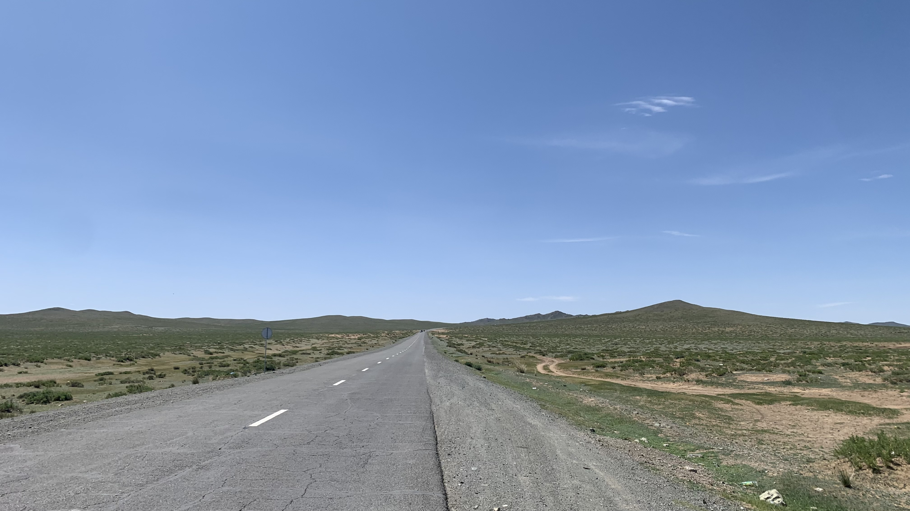
離開餐廳後就是一路攀升，往後幾天都是這樣的行程。
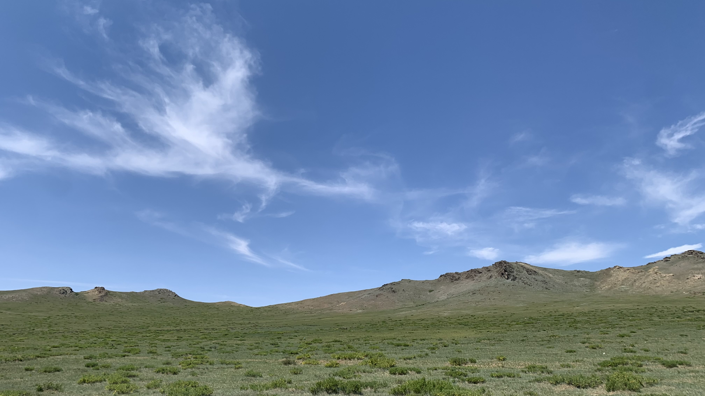
旁邊的山像海浪一樣，上方有破碎的岩石浪花。
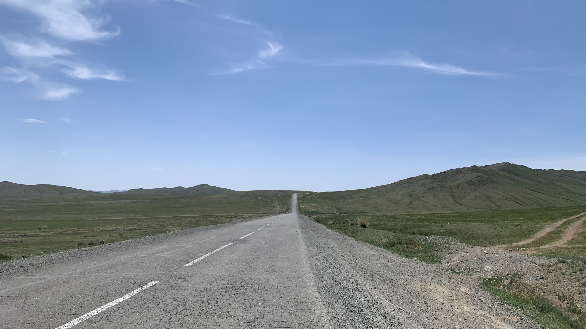
從出發開始，十公里中大概有五公里都是推著車前進的。在韓國時曾經大言不慚地說上坡加逆風是最好的自我證明？
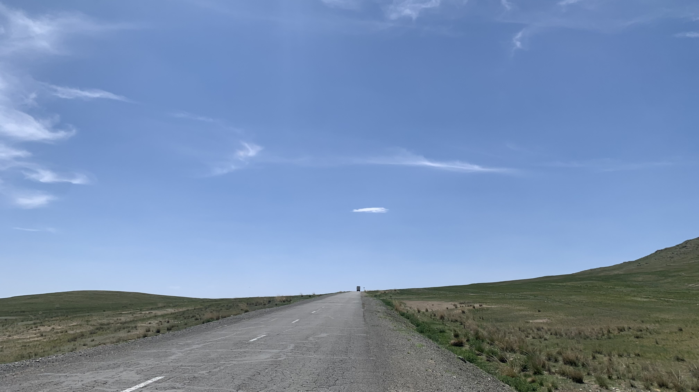
看著這個偽頂端，知道後面還有無數個坡，在心裡咒罵曾經天真的自己。騎在他人鋪設好的平緩道路上，卻以為已經可以征服地貌和大氣了嗎？
水壺裡的水消耗得很快，開始後悔沒有多帶一些備用水。突然有輛白車停在路中間，以為發生了什麼事，沒想到窗戶伸出一隻手，舉著一瓶礦泉水。加速踩踏板往前衝，一手接過水後用蒙語大喊一聲：「謝謝！」車子裡的人頭也不回地離開。
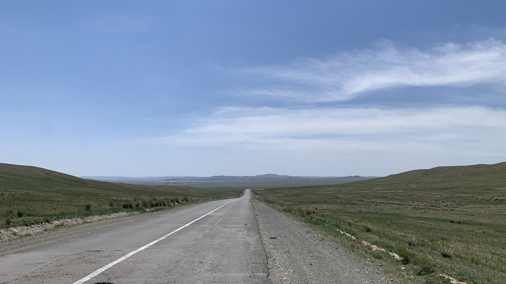
水源焦慮解決後人也放鬆了起來，大概數到第十五個坡頂後開始呈現放空狀態，往後的無盡上坡、連續九天的陰雨，還有什麼人類精神、動態張力宇宙都跟我沒有任何關係。
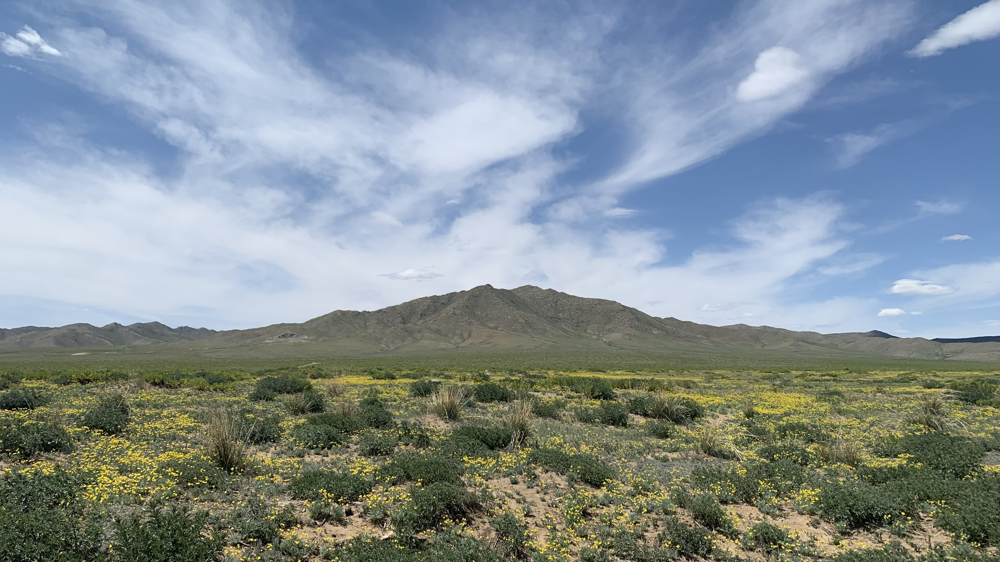
坐在一片黃色小花前發呆，被風吹得搖搖晃晃，相當可愛。
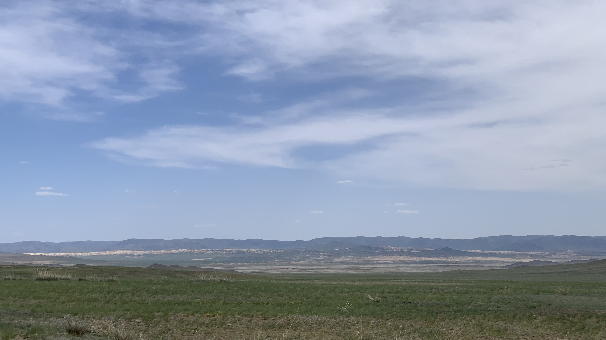
又翻過一個山坡，左邊竟出現像是沙漠的黃土景象。至今還是不太明白這種越過一個坡，地貌就出現大翻轉的構造是怎麼形成的。
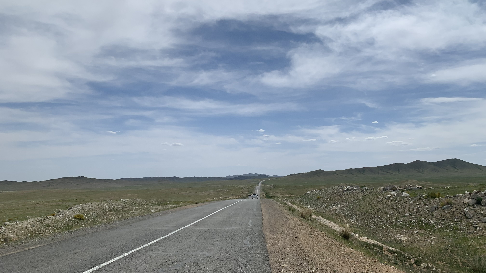
又是一陣上坡，沒完沒了。
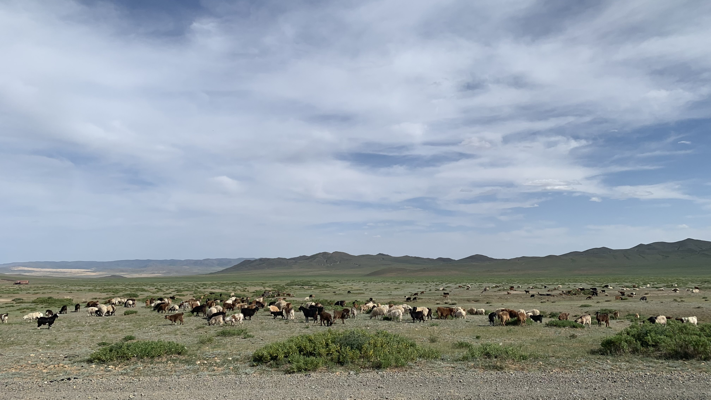
今天的照片幾乎都是坐在路邊休息時拍的，這兩天看到的山羊越來越多，看來已經是羊絨產區了。
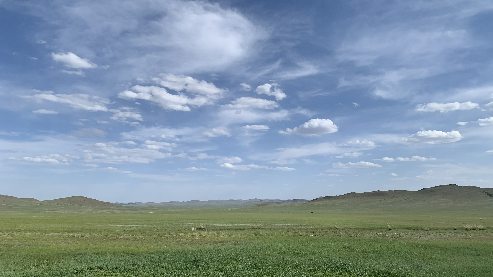
有沒有可能乾脆就坐在這裡，然後果斷地結束旅程呢🙂
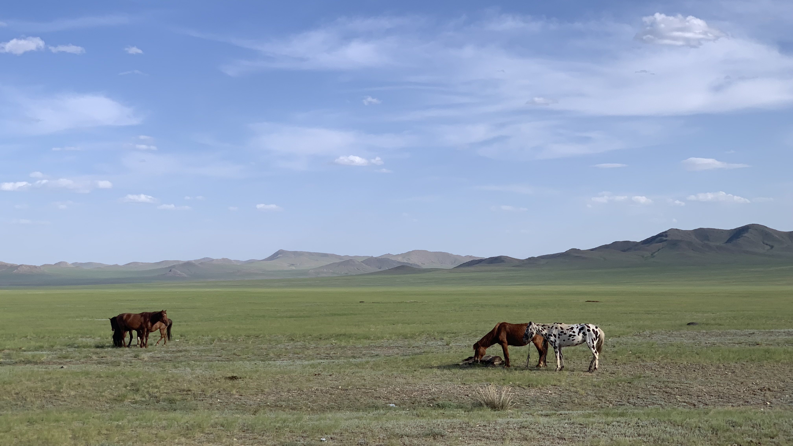
被路邊一匹黑點白馬吸引，正要停下來拍照時，發現地上躺著一匹小馬，看了好久一動也不動，似乎是沒有生命跡象了。站在旁邊和大馬們一起默哀十秒鐘，當然我沒有發出讀秒的聲音。離去前和棕色大馬點頭致意，大馬看了我一眼也點頭。
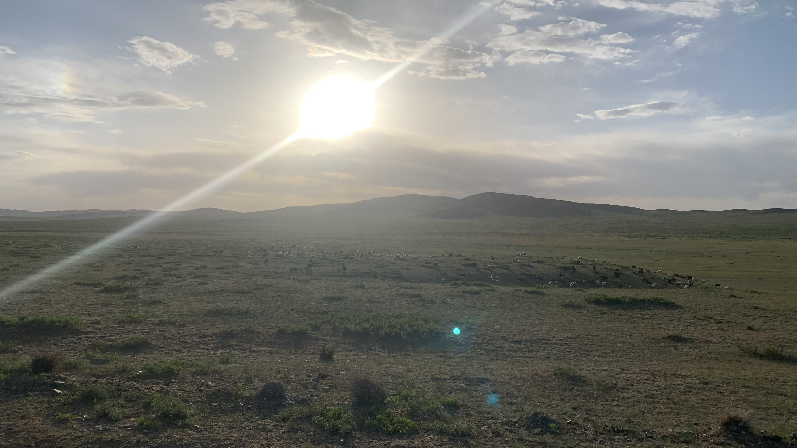
晚上七點了，繼續趕路，遠方還有無盡的山。想到早上躺在河邊哼著廢物曬太陽，下午爬坡時歌單已經從李宗盛的山丘變成董事長的愛我你會死，此刻電力只剩16%的手機裡播放的是閃靈的皇軍。路過幾輛轎車伸手對我比了讚，是在稱讚手機裡的音樂還是我的歌聲就不得而知了。
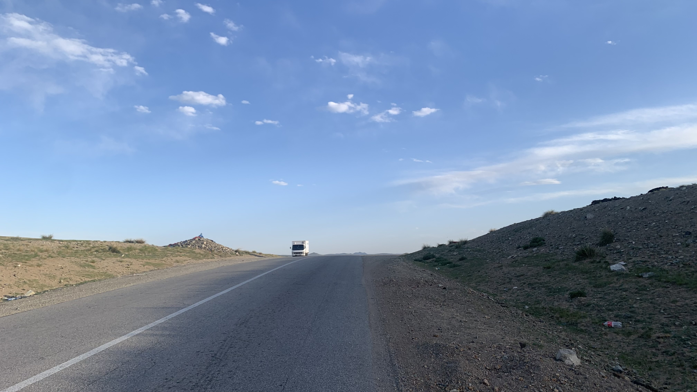
將近八點，開始物色紮營地點，路邊的山谷被羊群佔領，滿坑滿谷這形容詞真是有意境，此處應該有不少羊便便，因此決定繼續往前走。
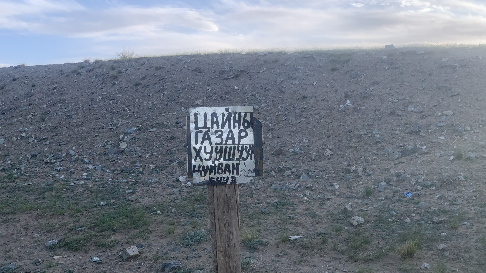
這是今天最後一個上坡，不管後面有什麼都必須停下來休息。
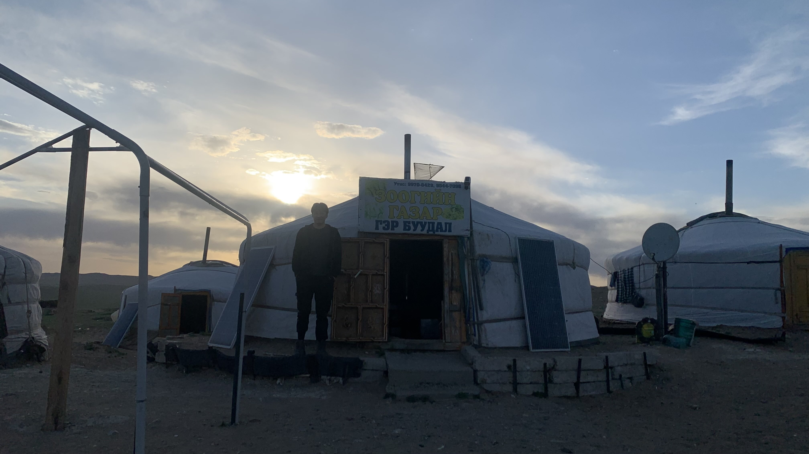
頂端竟出現餐廳的招招牌，今日份的水已經快喝完了，趕緊牽車往路肩走。
餐廳是幾個蒙古包組成的，中間的蒙古包外面有名青年動也不動以羅丹沉思者的姿勢坐在夕陽前。走近時他瞪著我，表情相當兇狠。想起自己還沒拉下面罩，露出臉後開口詢問：「這裡有水嗎？」
青年指了後面的方向，看我摸不清頭緒後站起身，走近蒙古包裡，舀了一瓢水，伸手跟我要車上的寶特瓶。我拿出大的寶特瓶給他，他將身體和水正對著我倒進瓶裡。裝滿後又和我要了前貨架上的小水瓶，一樣是進屋舀了一瓢水，走出來面向我，將水瓢裡的水倒進瓶裡。
轉身將自己的身體和水瓢與水壺面向我倒水的動作相當有儀式感，不知道是下意識的舉動，還是一種傳統的禮貌。謝過他後立馬喝了一大口水，問他能不能讓我拍張照呢？原本兇狠的表情突然露出微笑，站在夕陽前讓我拍了照作紀念。
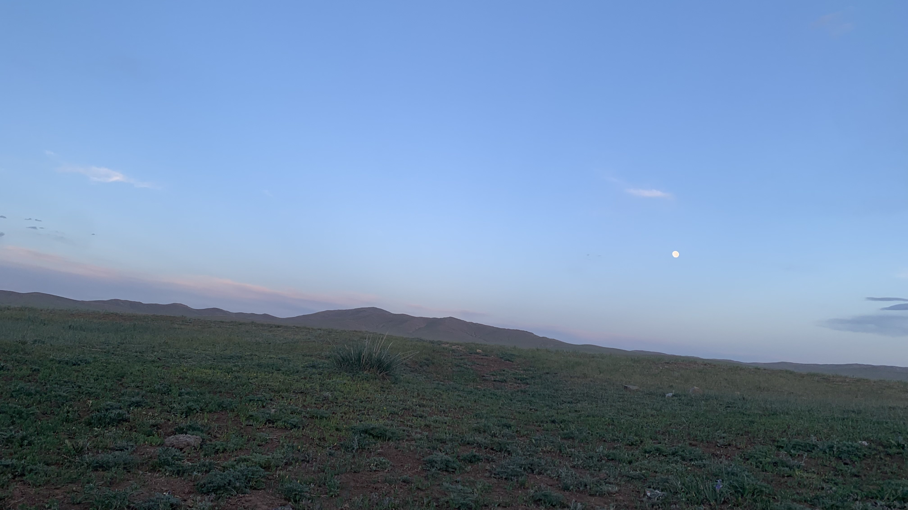
口不渴了，人就有了審美餘裕，這位小兄弟也長得太帥了，實在可以考慮當個模特兒什麼的。
謝過模特兒青年後一路往下滑，路邊有許多馬和羊和老鷹的屍體，一直找不到合適的紮營處。左邊的山坡有兩隻牧羊犬正在巡視領地，只好在他們對面的空地隨便找了一個涵洞躲到下方。

搭好帳篷已經是這個天色，和昨日比起來略顯寒酸，不過沒有碎玻璃還是可以將就一晚。沒有力氣燒水，抓了幾把葡萄乾塞進嘴裡，今日就這樣吧。
今日花費： 咖啡+巧克派+水 16500、蘋果汁 葡萄乾 10500、午餐+咖啡 180000元